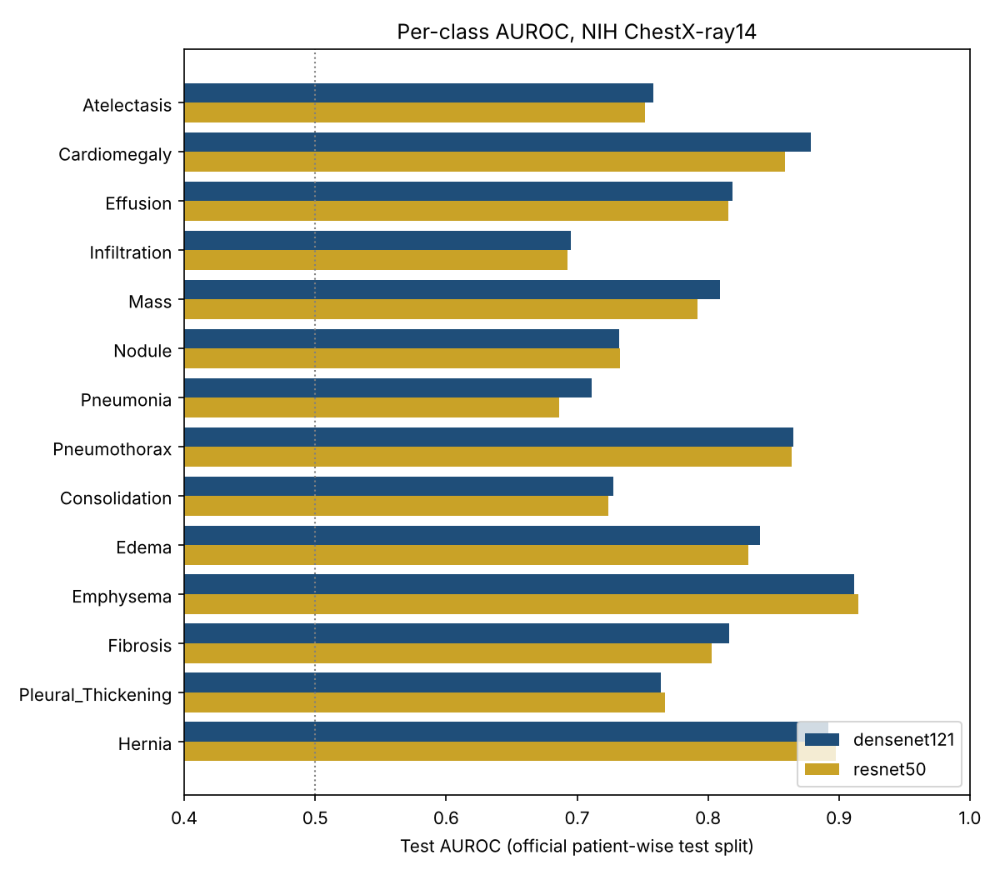
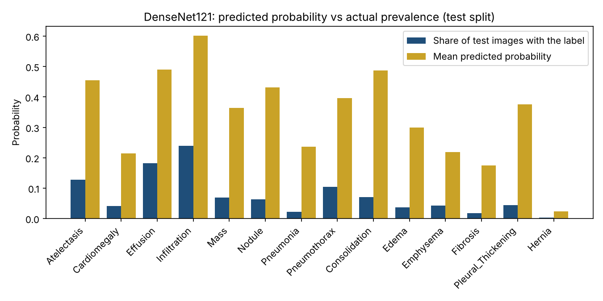

Experiment · Medical imaging · 29 October 2026
I rebuilt my chest X-ray model: 0.80 AUROC on a patient-wise split, and probabilities up to 11 times too high
Muzammal Hussain, Software Engineer, Data Scientist and AI Researcher · 29 October 2026 · One training run on a public dataset
In 2023 my first version classified chest X-rays from the NIH ChestX-ray14 dataset and reported about 58% accuracy. Looking back, that number could not be trusted: the task was set up wrongly, the metric hid rare diseases, and the same patient could appear in training and validation. I rebuilt it in one Kaggle notebook and then checked something the first version never looked at: whether the model's percentages mean what they say.
Key findings
- With 14 labels, the official patient-wise split and per-class AUROC, DenseNet121 reached a test mean AUROC of 0.801 (95% interval 0.796 to 0.806) and ResNet50 0.795, on 25,596 test images.
- DenseNet121 was ahead in a paired bootstrap by 0.006 (interval 0.003 to 0.010). Small, but it did not flip in 1,000 resamples.
- The raw probabilities were far too high: 2.5 to 10.9 times the real share of images with each label. For consolidation the model said 49% on average, while 7% of test images had it.
- A simple per-class correction (Platt scaling) cut the mean calibration error from 0.265 to 0.005 without changing the AUROC.
What changed from the first version?
| V1 (2023) | V2 (2026) | |
|---|---|---|
| Task | 836 label combinations as classes | 14 labels, one sigmoid output each |
| Split | random by image | official split, by patient |
| Metric | accuracy | per-class AUROC |
| Result | 58.1% validation accuracy | 0.801 test mean AUROC (DenseNet121) |
The two results measure different things, so they cannot be compared. The V2 split puts 77,719 images in training, 8,805 in validation and 25,596 in test, and the code checks that no patient appears in two of them. Both models were ImageNet-pretrained, trained at 224x224 with the same settings on a Kaggle T4 GPU, and stopped after 7 epochs, keeping the weights from epoch 5. After that the training loss kept falling while the validation AUROC dropped, which is the overfitting V1 never caught.

The easiest labels were emphysema (0.912), hernia (0.892) and cardiomegaly (0.879). The hardest were infiltration (0.695), pneumonia (0.711) and consolidation (0.728). On an X-ray all three appear as white opacity where air should be, so they overlap visually, and their labels, which were mined from report text, may also be the least reliable.
The percentages were wrong
AUROC only asks whether a sick patient gets a higher score than a healthy one. It says nothing about whether "49%" means 49%. I compared the average predicted probability with the real share of test images for each label.

Every label was overestimated, from 2.5 times for infiltration to 10.9 times for pneumonia. The likely cause is a choice I made on purpose: during training, rare labels were given more weight so the model would not ignore them. That helps the ranking but inflates the probabilities. Fitting a one-line logistic correction for each label on half of the test images and applying it to the other half brought the mean expected calibration error from 0.265 to 0.005 and the mean Brier score from 0.175 to 0.058. The AUROC stayed at 0.801.
I also tried letting the model refer its least certain images to a person. Keeping the 50% of images it was most sure about raised the mean AUROC on those images from 0.801 to 0.816. This used the uncorrected probabilities, so it is a first look only.
What I noticed
- For a clinician, wrong percentages can be more harmful than a lower AUROC. With raw outputs, almost every image would raise a consolidation alarm. Any demo or app built on this model has to show recalibrated values.
- The class weights that helped rare labels are also what broke the probabilities. A training choice that fixes one problem needs a check for the problem it creates.
- My guess is that the image alone is not enough to separate infiltration, pneumonia and consolidation, and that clinical information would help. I have not tested that.
Limitations
- One run and one seed per model. The bootstrap resamples images, not patients, so the true intervals are probably wider.
- The correction was fitted and checked on halves of the test set split by image, not by patient. A clean version fits it on the validation set.
- 224x224 images and simple flips only. All images come from one hospital, so results may not hold elsewhere.
- This is a research experiment, not a medical device, and must not be used for diagnosis.
Reproduce the experiment
The repository has the Kaggle notebook, the saved test predictions, the analysis script and its unit tests. The analysis runs on a Mac with Python 3.9 in a few minutes: python3 reliability_analysis.py --results results --out analysis. Training both models takes under two hours on a free Kaggle T4.
Data: NIH ChestX-ray14 (Wang et al., 2017), from the Kaggle dataset nih-chest-xrays/data. Related reading: Rafferty and Rajan, 2025, on the limits of public chest X-ray datasets. This is a small engineering experiment, not a peer-reviewed paper.